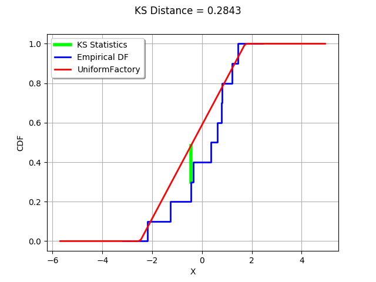

The Kolmogorov-Smirnov statistics¶
In this example, we illustrate how the Kolmogorov-Smirnov statistics is computed.
We generate a sample from a gaussian distribution.
We create a Uniform distribution which parameters are estimated from the sample.
The Kolmogorov-Smirnov statistics is computed and plot on the empirical cumulated distribution function.
[1]:
import openturns as ot
The computeKSStatisticsIndex function computes the Kolmogorov-Smirnov distance between the sample and the distribution. Furthermore, it returns the index which achieves the maximum distance in the sorted sample. The following function is for teaching purposes only: use FittingTest for real applications.
[2]:
def computeKSStatisticsIndex(sample,distribution):
sample = ot.Sample(sample.sort())
n = sample.getSize()
D = 0.
index = -1
D_previous = 0.
for i in range(n):
F = distribution.computeCDF(sample[i])
D = max(F - float(i)/n,float(i+1)/n - F,D)
if (D > D_previous):
index = i
D_previous = D
return D, index
The drawKSDistance function plots the empirical distribution function of the sample and the Kolmogorov-Smirnov distance at point x.
[3]:
def drawKSDistance(sample,distribution,x,D,distFactory):
graph = ot.Graph("KS Distance = %.4f" % (D),"X","CDF",True,"topleft")
# Vertical line at point x
ECDF_index = sample.computeEmpiricalCDF([x])
CDF_index = distribution.computeCDF(x)
curve = ot.Curve([x,x],[ECDF_index,CDF_index])
curve.setColor("green")
curve.setLegend("KS Statistics")
curve.setLineWidth(4.*curve.getLineWidth())
graph.add(curve)
# Empirical CDF
empiricalCDF = ot.UserDefined(sample).drawCDF()
empiricalCDF.setColors(["blue"])
empiricalCDF.setLegends(["Empirical DF"])
graph.add(empiricalCDF)
#
distname = distFactory.getClassName()
distribution = distFactory.build(sample)
cdf = distribution.drawCDF()
cdf.setLegends([distname])
graph.add(cdf)
return graph
We generate a sample from a standard gaussian distribution.
[4]:
N = ot.Normal()
n = 10
sample = N.getSample(n)
Compute the index which achieves the maximum Kolmogorov-Smirnov distance.
We then create a Uniform distribution which parameters are estimated from the sample. This way, the K.S. distance is large enough to being graphically significant.
[5]:
distFactory = ot.UniformFactory()
distribution = distFactory.build(sample)
distribution
[5]:
Uniform(a = -2.48294, b = 1.7388)
Compute the index which achieves the maximum Kolmogorov-Smirnov distance.
[6]:
D, index = computeKSStatisticsIndex(sample,distribution)
print("D=",D,", Index=",index)
D= 0.28431981766196146 , Index= 2
Get the value which maximizes the distance.
[7]:
x = sample[index,0]
x
[7]:
-0.43826561996041397
[8]:
drawKSDistance(sample,distribution,x,D,distFactory)
[8]:

We see that the K.S. statistics is acheived where the distance between the empirical distribution function of the sample and the candidate distribution is largest.